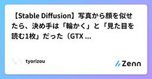

Zennの「機械学習」のフィード
フィード
Claude Codeと作る競馬予測システム開発記(14) 評価の切り方編
Zennの「機械学習」のフィード
前回は、モデルの再学習パイプラインについて書きました。 第14回となる今回は、データを train / valid / test に分ける「評価の切り方」の失敗談です。第3回で少し触れた学習期間の短縮について、そこに至るまでの経緯を詳しく書きます。毎週きちんと再学習していたのに、学習データは新しくなっていなかった、という話です。 当初は、データを時系列に並べて、行数の80% / 10% / 10%で train / valid / test に分けていました。時系列順に分けているので、未来の情報が学習に混ざることはありません。一見、問題のない分け方です。 ところが、毎週の再学習を続けるう...
11時間前

公式ツールでQwen2-VLを書き出したら、ネット上に存在しないエラーで死んだ話：行き止まり4つと検索不能のエラー1つ
Zennの「機械学習」のフィード
手順書どおりにやりました。ベンダー公式のツールキット、公式のガイド、ツールキットが「対応」とうたうモデル。ビルドステップ371件が全部緑で流れていって——最後に、丁寧に死にました。エラーメッセージは、公開インターネット的には「誰にも起きたことがない」ものでした。 エラー全文がこれです。 検索してみてください。私も認めたくないくらい何度も検索しました。結果ゼロ。フォーラムにも、GitHub issueにも、読める言語のブログにもない。あるのは私とターミナルと、この世でここにしか存在しない文字列だけ。 まず疑うのはここですよね。インストール不良、環境の相性、どこか半壊れ。 なので、わざと条件...
17時間前

【Stable Diffusion】写真から顔を似せたら、決め手は「輪かく」と「見た目を読む1枚」だった（GTX 1660）
Zennの「機械学習」のフィード
私はエンジニアではありません。AI（Claude）と一緒に、手元のパソコンだけで動く絵づくりを試しています。 自分の写真を何枚か渡して、自分に似た絵を作りたいと思いました。 やってみると、「似せる部品」を入れただけでは、ほとんど似ませんでした。部品を変え、重ね方を変え、写真の数を変えて、何が効いたかを1つずつ確かめました。この記事は、その記録です。 先に結果を書きます。 顔の「雰囲気」を写す部品（IP-Adapter Plus Face）では、強さを最大にしても似なかった。 「その人を見分ける数字」を使う部品（IP-Adapter FaceID）にすると、輪かくから似た。似ている・似てい...
1日前

検閲解除ツールhereticの「KL 0.0000」は劣化ゼロではなかった: Qwen3の<think>が指標を素通りさせていた
Zennの「機械学習」のフィード
hereticは、追加学習なしで既存のLLMの拒否応答(安全アラインメント)を抑制するPython製CLIツールである(AGPL-3.0-or-later)。 方向性アブレーション(abliteration)という解釈可能性研究の手法に、OptunaのTPE探索を組み合わせ、「拒否率」と「KLダイバージェンス(元モデルからのズレ)」を同時に小さくするパラメータを自動で探す。 筆者はDay 036の記事でもhereticを試し、upstream既定(Qwen3-4B-Instruct-2507、100 trial)で「拒否を0にすること」と「元モデルからのズレを小さくすること」が強いトレー...
1日前

類似事例の並べ替えを OpenAI Decisions API に任せてみた：店舗・事務所の賃料査定での実験
Zennの「機械学習」のフィード
スマサテ株式会社のAIエンジニアのkoyanoです。 弊社は賃料査定システムを開発しており、私はその査定ロジックの改善などを担当しています。最近は、住居だけでなく店舗・事務所の賃料査定のロジックを作成していました。 店舗・事務所の査定では、周辺で募集されている「似ている事例」を選び、その賃料から査定額を出します。この「似ている」を、今は手作りの類似スコアで数値化して並べています。 ただ、実際の物件を見比べると「この2つは数字の上では近いけど、通りの雰囲気が全然違う」といったことがよくあります。スコアにしにくい情報も含めて、もっと実感に合った並べ替えはできないか、というのがこの記事の出発点...
1日前

Whisperの注意ヘッドを1個だけいじって、日本語の聞き取りが崩れないか120文で確かめてみた
Zennの「機械学習」のフィード
音声認識モデルのWhisperには、音声にない文章を出力してしまう癖があります。無音や雑音の区間に、それらしい一文が出てくる現象です。 これを追加学習なしで、重みを少し書き換えるだけで抑えられないか。手元でそんな実験をしていて、その途中で日本語の聞き取りへの影響を確かめました。この記事はその検証記録です。 先に結論を書いておきます。 Whisper smallのデコーダで、注意ヘッドを1個だけ弱める編集を3通り試した 日本語の合成音声120文で比べたところ、どの編集も編集なしより良くならなかった ただし差はごく小さく、誤りが増えた分の大半は1つの文から出ていた 効果は出ませんでしたが、重...
1日前

線画着色の評価を「毎回同じヒント」で: pip install hintauc ではじめる Hint-AUC
Zennの「機械学習」のフィード
線画着色（line art colorization）の論文を読んでいると、「ユーザーが置いた色ヒント」をランダムに作って評価している例がよくあります。ランダムなので、同じモデルでも実行するたびにスコアが変わります。 そこで、イラストの領域からヒントを決定的に作る（DHT） ことと、ヒントの量を 0 % から 100 % まで変えたときのスコアを曲線の面積でまとめる（Hint-AUC） ことを提案しました。IEEE TVCG 2026 に採録された論文です。評価用のライブラリを pip で入れられるようにしたので、使い方を簡単に紹介します。 上: 決定的に作ったスクリブルのヒント（ヒント...
2日前

評価基準と現場の慣習が食い違うとき、注記を足すとLLM判定器はどう変わるか ― 999件と未見の300件で確かめた
Zennの「機械学習」のフィード
LLMに会話の品質を採点させるとき、評価基準の字面と現場の慣習が食い違うことがあります。たとえば「名前を呼ぶならファーストネームで」という基準は、日本で正しいとされる「名字＋様」とぶつかります。 このような食い違いがある箇所に、評価基準を変えずに「地域慣習の注記」を3行だけ足しました。その結果をClaudeの4モデル（Haiku 5.5・Sonnet 5.5・Opus 5.5・Fable 5.2）で測っています。 食い違いは、注記でほぼ解消できた。 名字＋様の減点率は、注記を書くときに見たデータ（999件）で 93〜100% → 0〜2%、注記を書いた後に用意した別のデータ（300件）で...
2日前

【フィジカルAI解説】Egocentricとは？エゴセントリックデータの集め方について解説
Zennの「機械学習」のフィード
フィジカルAIの研究開発で使う学習データは、「フィジカルAIデータピラミッド」として整理できます。土台となるのは、3D仮想環境で物体の位置や作業条件を変えて生成するシミュレーションデータ（合成データ）です。その上に、人が実際に作業する様子を記録した一人称視点データ、人が小型グリッパーを手に持って物のつかみ方や動かし方を実演したUMIデータ、そして人がロボットを遠隔操作して収集した実機のテレオペレーションデータが続きます。 本記事では、その中でも人の作業を一人称視点で捉えるエゴセントリックデータに着目し、モデル学習での役割と、収集を始める前に整理しておきたいポイントを解説します。 Egoc...
2日前

DIY AutoML 開発メモ (2) TensorFlow・PyTorch・AutoGluon・H2Oで結果を照合する
Zennの「機械学習」のフィード
前回は、CSVの点検から分類モデルを選び、取り置いたデータで最後に評価するところまでを紹介しました。今回は、その結果を別のライブラリでも確かめてみます。題材はIrisとWineです。 TensorFlowとPyTorchには、同じ構成のニューラルネットワークを渡して、予測ラベルと確率を比べました。AutoGluonでは、選んだモデルをDIY AutoMLと同じ保留テスト行・評価指標で照合しました。H2O AutoMLでの照合は追加検証として掲載します。 WindowsのCPUとPython 3.13.17で、TensorFlow 2.20.0とPyTorch 2.14.0のCPU版を使い...
2日前

ML基盤から深層学習まで固める技術書5選
Zennの「機械学習」のフィード
去年の秋頃、LLMを使ったプロダクト開発に本格的に関わるようになった。プロンプトエンジニアリングやRAGの実装はなんとかこなせるものの、モデルの挙動が想定外になったとき「なぜそうなるのか」を説明できない自分に気づいた。APIの向こう側がブラックボックスのままだと、トラブルシュートで手が止まる。 そこで基礎を固め直そうと技術書を何冊か読み始めたが、途中で挫折する本が続いた。分厚い教科書を1ページ目から律儀に読む方法がそもそも自分に合っていない。結局、必要な箇所を絞り込み、手を動かしながら読む形に切り替えてから、ようやく知識が定着し始めた。 この記事では、自分がML・ディープラーニングの基盤...
2日前

RTX 3060 1枚・誤差逆伝播なしでゼロから日本語モデルを育てた「ENNE」の設計と限界
Zennの「機械学習」のフィード
現在の言語モデルは、巨大な1つのネットワークを大規模なGPUクラスタで一括学習して完成させる前提で設計されている。本体の重みへ知識を追加したり振る舞いを直したりする場合、再学習や重い調整がつきまとう。 これに対して、知能を「一度学習して完成させる巨大な塊」ではなく、**「設計し、育て、後から部品を足していくシステム」**として作れないかと考えたのが ENNE（Engineering Neural Network Engine） である。 日本語を対象に、個人のGPU（RTX 3060 12GB）1枚でv0.1から開発を続けている。大きな特徴は次の3点だ。 ゼロから家庭用GPU 1枚で育て...
2日前
「Attention Is All You Need」は機械翻訳の論文だった——Transformer誕生の要点を読み直す
Zennの「機械学習」のフィード
ChatGPT をはじめとする生成AIの基盤、Transformer。その出発点である論文「Attention Is All You Need」（2017年）は、実はチャットAIの論文ではなく、機械翻訳の論文でした。 この記事は、note で連載した『必要なのは、Attentionだけだった』の第1部を、技術者向けに要約し直したものです。論文が何を問題にし、何を捨て、何を残したのか——要点だけをたどります。 2017年6月12日、arXiv に投稿。著者は Ashish Vaswani、Noam Shazeer、Jakob Uszkoreit、Illia Polosukhin ら8人 同...
2日前

LightGBM で全9万回の国会会議を学習させたら ROC-AUC 0.818 で「荒れる会議」を予測できた話
Zennの「機械学習」のフィード
国会議事録の会議単位データ（mart_meetings_ml.parquet）をベースに、以下のように目的変数と特徴量を設計しました。 目的変数（is_turmoil）: 会議内のト書きに「ヤジ」「騒然」「聴取不能」「休憩」などの議場混乱シグナルが含まれるか（1 / 0） 主な特徴量: 総理・大臣への言及率 発言文字数の標準偏差（バラつき） 1日の発言回数・平均文字数 特定キーワード（「検討」「善処」など）の出現率 開催年・委員会種別 学習済みモデルの寄与度（Feature Importance）を上位から並べると、非常に興味深い結果になりました。 総理・大臣への言及率（1,149） 発...
2日前

【scikit-learn入門 #9】クラスタリング ─ KMeans（教師なし学習）
Zennの「機械学習」のフィード
本記事は「Pythonで機械学習を行うscikit-learn入門」シリーズの第9回です． 第8回までは，「正解」を与えて学習する 教師あり学習（回帰・分類）を扱ってきました． 第9回からは，「正解」のないデータから構造を見つける「教師なし学習」 に入ります． その代表が，データを似た者どうしにグループ分けする クラスタリング です． 「正解がないのに学習できるの？」という新鮮な驚きを，ぜひ体験してください． 私のscikit-learnライブラリのバージョンは "1.5.2" です． シリーズ構成予定（全11記事） インストール 〜 機械学習の全体像（fit / predict） デー...
2日前

LLM判定器は日本の「名字＋様」を減点したりしなかったりする ― 4モデルを繰り返し回した実測
Zennの「機械学習」のフィード
架空の日本語サポート会話50件を、4つのLLM（Claude・Gemini・DeepSeek・Qwen）に品質監査させ、新しい会話で同じ指示文を原則3回ずつ流しました（Qwenは時間がかかるため1〜2回）。 同じ指示文でも、「名字＋様」を基準1どおりに減点する回と、現場の判定に寄せて減点しない回がある。 Geminiは3回中2回、DeepSeekは3回中1回、Qwenは2回とも、名字＋様で呼んだ7件をすべて減点しました。Claudeは3回とも減点しませんでした。 全モデルが共通して誤減点したのは「社内手順書にない一般的な手順」。 再起動やキャッシュ削除を「手順書違反」と判定するミスは、補...
2日前

無料AI売上予測ツールを作成：実店舗1,521日＋RossmannでExcel関数・LightGBM・Chronosを比較
Zennの「機械学習」のフィード
飲食店・小売店・ECサイトの現場で「来週・来月の売上や需要を予測したい」というニーズは常にありますが、実務の現場は極端に二極化しています。 Excelの移動平均や FORECAST.ETS で手作業する（祝日や曜日周期のズレ、外れ値で簡単に破綻する） 月額数万円〜数十万円の需要予測SaaSを導入する（中小企業・個人店舗にはコストも稟議も重すぎる） そこで、「手元のPOSレジやECのCSV・Excelをドラッグ＆ドロップするだけで、登録不要・無料でAI売上予測と安全在庫計算ができるWebアプリ」 として SalesCast を個人開発しました。 ただ、「AIで高精度に予測できます！」と言う...
2日前

辞書を使わずに青空文庫の文章を文節に区切る機械学習モデル（線形の点予測で F1 0.988）
Zennの「機械学習」のフィード
青空速読 RSVPリーダーは、青空文庫の作品を RSVP で読む iOS アプリです。 RSVP（Rapid Serial Visual Presentation）は、文章を短い語句に区切り、画面の同じ位置にひとつずつ表示する読み方です。行を目で追う必要がないので、視線を動かさずに、スマホの小さな画面でも速く読み進められます。フラッシュのように次々と現れる言葉を追うだけなので、通勤や待ち時間のような短い時間でも、名作を少しずつ読み進められます。 青空速読 RSVPリーダーは、文章を文節ほどの長さに区切り、画面の中央にひとつずつ表示します。この読み方では、語の途中で切れると、読み手は次の表...
2日前

量子機械学習の初期レビューから見える世界
Zennの「機械学習」のフィード
手書きの数字を見分けたり、見たことのない手書き数字の画像を作ったりするには、データの中にあるパターンを学ぶ必要があります。これが機械学習です。では、その学習の一部を量子コンピュータに任せると、何が変わるのでしょうか。 Jacob Biamonteらの『Quantum Machine Learning』は、この問いをさまざまな角度から整理しています。この記事では、量子に期待される利点を「計算を速くする」「複雑な分布からサンプルを得る」「量子の状態を直接調べる」の3つに分けて紹介します。Biamonteらのレビュー（Nature、2017年） · たとえば、手書きの「3」と「8」を見分ける機...
2日前

PyTorchと量子アニーリング(D-Wave Quantum)の連携
Zennの「機械学習」のフィード
量子アニーリングは、量子ゆらぎ組合せ最適化において最適解を探索する手法[1]として知られていますが、近年では機械学習で必要なサンプルを高速に得るためのサンプラーとしての研究[2]も行われています。 そうした潮流の中で、昨年8月に量子アニーリングマシンを提供するD-Wave Quantum Inc.は、同社の量子アニーリングマシンをPyTorchから利用するためのオープンソースツールキットを発表しました。ツールキットは同社のOceanソフトウェア群の一部で、MNISTの手書き数字を生成するデモも同時に公開されています。D-Waveの公式発表 このデモでは、PyTorchで構築したニューラル...
2日前